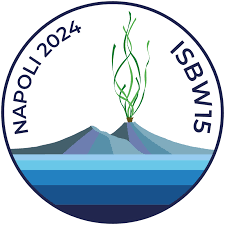
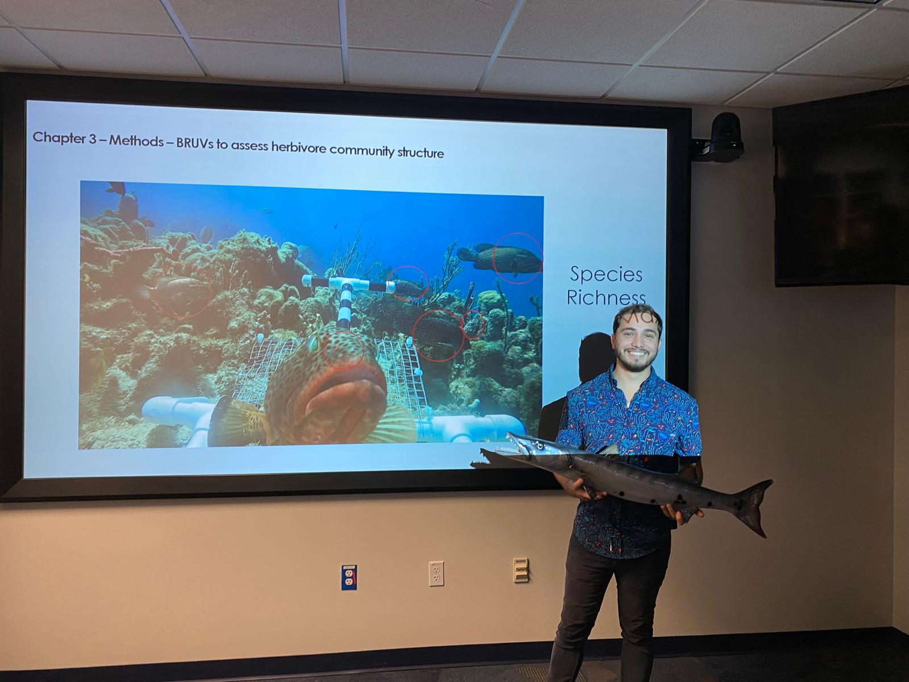
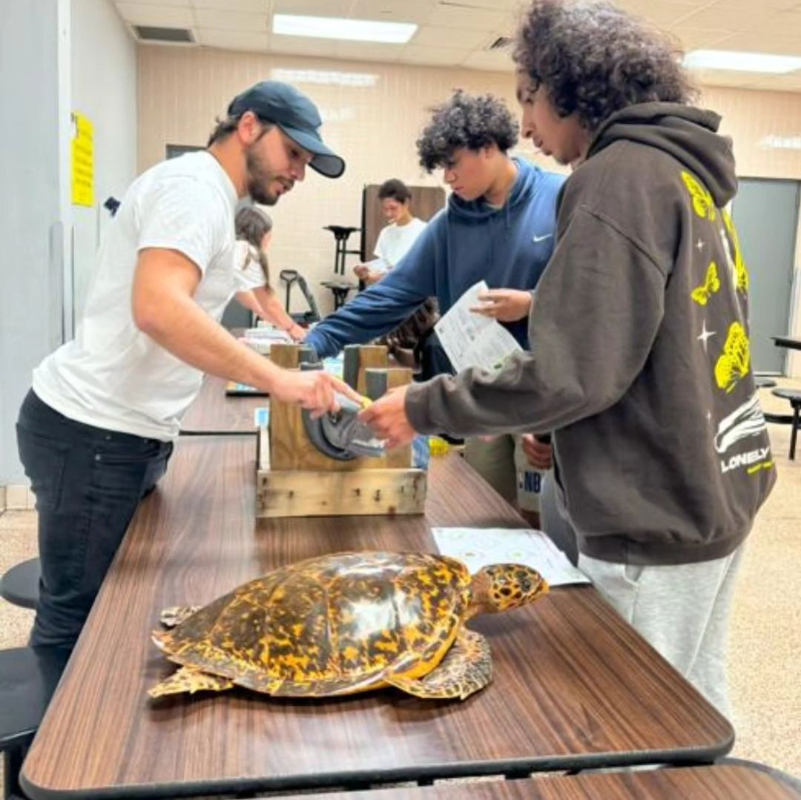
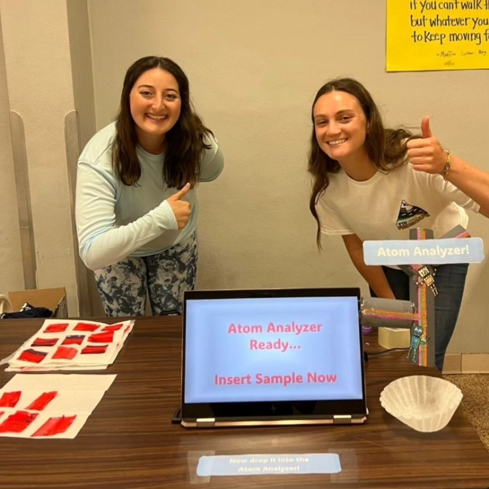
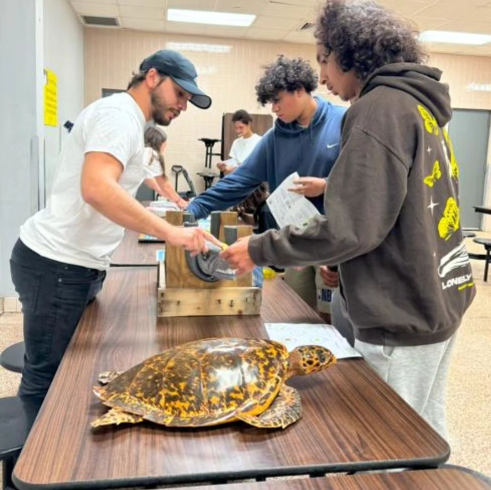
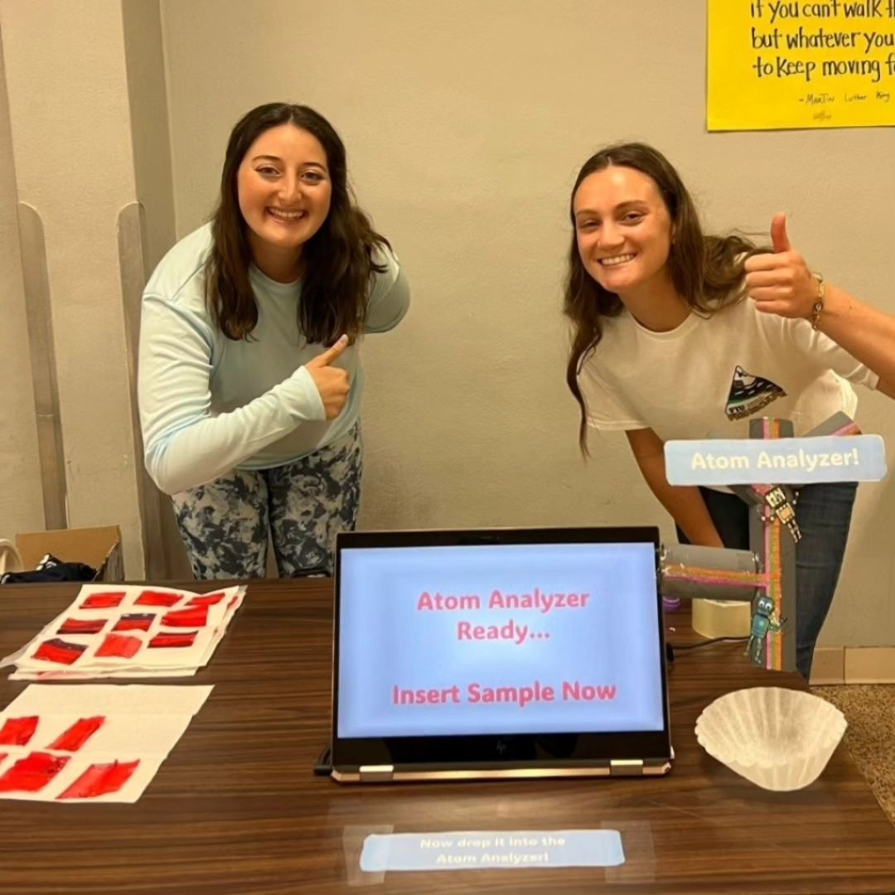
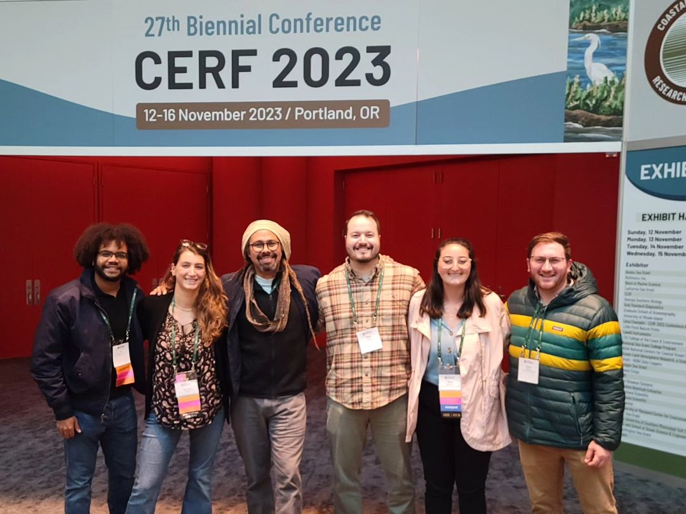
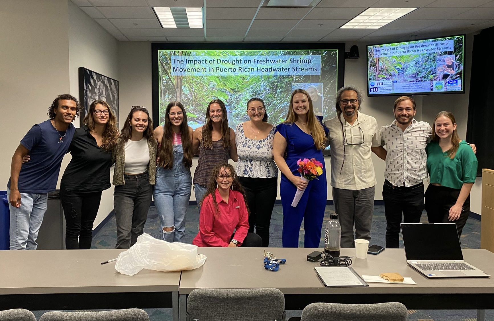

News
August 12, 2024
Hannah-Marie Lamle is selected as a Florida SeaGrant Graduate Student Coastal Ocean Fellowship Receipent!
Hannah-Marie was awarded $25,000 in order to fund her research proposal, “Show me your colors: Using hyperspectral analysis to quantify coral health.” This research will assist her dissertation work, as she conducts field studies via photogrammetric monitoring on Miami’s reef tract and collects coral tissue for physiological trait processing.
June 17 - 21, 2024
Members of the SELab present at the 2024 World Seagrass Conference & 15th International Seagrass Biology Workshop!
Our Seagrass-oriented lab members traveled across the pond to Napoli, Italy to present ongoing research at ISBW 2024! This conference was a great honor, we are happy to have such great representation from the SELab as well as our sister lab, the Coastal Fish Ecology & Fisheries Lab. We heard great talks from our lab members, including:
- Gina Badlowski: “Mesoconsumer trophic linkages across reef-seagrass seascapes within Sanctuary Preservation Areas in the Florida Keys”
- Marianna Coppola: “Addressing seagrass seascape multiscale responses to water quality in a subtropical estuarine lagoon”
- Dr. James: “Hypervolume modelling: a multivariate tool for seagrass ecosystem assessments”
- Dr. Rodemann: “Development of an upscaled submerged aquatic vegetation leaf cover model for long-term time series analysis in Florida Bay”
- Dr. Rehage: “Identifying critical thresholds and effects of land-based pollution from nutrients and pharmaceuticals on seagrass habitats and fauna”
Great job to all presenters, we are happy to have your representation at such a prestigious conference internationally!

May 6 - 12, 2024
Marianna Coppola partners with SeaKeepers for Middle Keys Expedition
In an effort to continue ground truthing for the FISHSCAPE project, Marianna Coppola partnered with the International Seakeepers Society to be matched with yacht owners wanting to help scientists get out in the field. She completed valuable work for her remote sensing project affiliated with FISHSCAPE, many thanks to Captain and crew aboard the DISCOVER Yacht Amelia Dawn II!
May 2, 2024
Gina Badlowski wins FCE LTER Best Student Poster Award!
Please help us in congratulating Gina on her wonderful accomplishment of winning the FCE LTER all scientists meeting “Best Student Poster” award! We are proud of her dedication to her work and showcasing her research at the conference.
April 14, 2024
Valentina Bautista and Nico Rivas win Benthic Ecology Meeting scholarships!
The 2024 Benthic Ecology Meeting sponsored Valentina Bautista and Nico Rivas for their talks, including lodging and a transportation stipend. We are honored that two of our lab’s members were selected for this award.
April 4, 2024
Nico Rivas moves on to PhD Candicacy, successfully defends proposal
A congratulations are in order for Nico Rivas, who successfully defended his project proposal, titled “Assessing the Dynamic State of Caribbean Coral Reefs: The Influence of Seascape Properties, Macroalgae and Herbivory on Coral Population Growth and Community Assembly.” Now, Nico is a PhD candidate and will spend the rest of his graduate career focused on analyzing data and writing his dissertation. Well done, Nico, for a great defense and passing this grad school milestone!

March 13, 2024
Members of the SELab help with Family Science Night Outreach Event supporting FISHSCAPE research
Team Seascape took over team FISHSCAPE for an outreach event at Citrus Grove K-8 two weeks ago! Lab members Hannah-Marie, Gina, and Nico spent a night teaching k-8 students and parents about some of the science the lab (and collaborators) do for an ongoing project down in the Florida Keys:
Fish In Seagrass Habitats: Seascape Connectivity Across Protected Areas
Students had a blast learning how to measure a Great Barracuda, one of the main study species! Students also got to learn about stable isotopes: how to process samples using sweet tarts and fruit roll ups, drop their sample into an analyzer, and finally obtaining their results that determined their resource contributions! As a special bonus, they got to eat their sweet sample! What a blast it was to do educational outreach and we look forward to future events to share our science with others!
 



December 14, 2023
Nico Rivas and Gina Badlowski win FIU IOE Coastlines and Oceans Division Research Award!
Graduate students Gina and Nico, in the SELab were award $1000 towards their respective graduate research from the FIU Institute of Environment Coastlines and Oceans Division Research Award. This award will help them with purchasing the necessary supplies for laboratory processing and presentation of research at a scientific conference. Congratulations Nico and Gina!
November 12 - 16, 2023
Members of the lab present at the Coastal & Estuarine Research Federation Conference in Portland, Oregon
The Santos Seascape Ecology Lab showed up in full force to CERF 2023 located in Portland, Oregon. The folowwing lab members gave presentations at the conference:
- Dr. Santos: “Influence of ecosystem state and habitat complexity on trophic dynamics”
- Dr. James: “Spatiotemporal patterns of seagrass seascape state and stability in South Florida”
- Gina Badlowski: “A multi-level approach to assessing nektonic biodiversity and community structure of seagrass seascapes”
- Marianna Coppola: “Mapping spatiotemporal changes in seagrass seascapes in South Florida”
Well done to all, and way to represent the SELab well! 
November 11, 2023
Now presenting Lauren Kabat, MS!
The Santos Seascpae Ecology Lab has its first graduate student alumni!! Congratulations to Lauren Kabat for passing her masters thesis defense, titled “The Impact of Drought on Freshwater Shrimp Movement in Puerto Rican Headwater Streams.” Lauren will be working in the coming months to submit chapters of her Masters thesis to scientific journals. We wish her all the best of luck in her future endeavours, and will miss her presence in the lab greatly! 